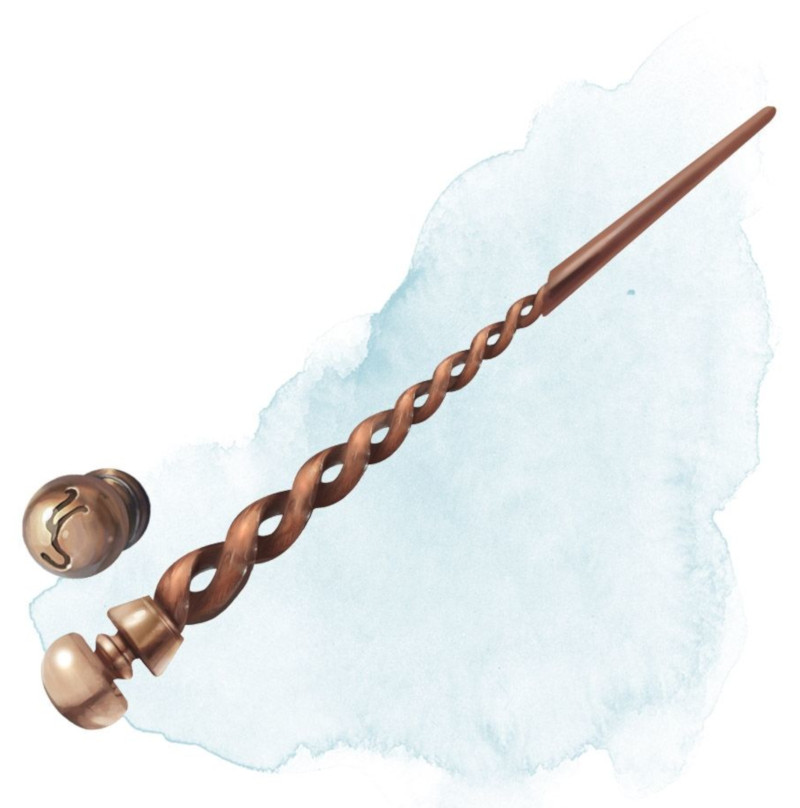

Baguette des secrets
[ Wand of Secrets ]
Baguette, peu commun
Cette baguette possède 3 charges. Si vous la tenez, vous pouvez utiliser une action pour dépenser 1 de ses charges et si un piège ou une porte secrète se trouve dans un rayon de 9 mètres autour de vous, la baguette tremble et pointe vers le plus proche de vous. La baguette récupère 1d3 charges dépensées chaque jour à l'aube.
Dungeon Master´s Guide (SRD)
